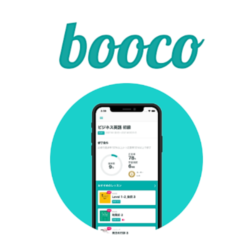
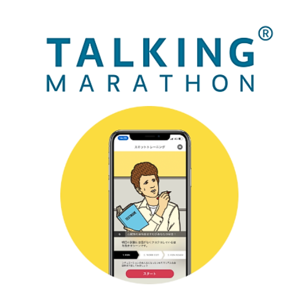
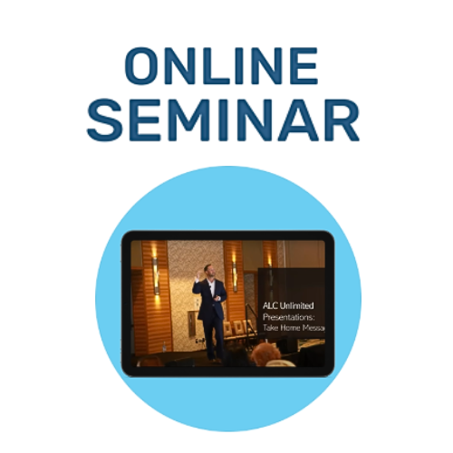

TOEIC対策コース
目標スコア別学習プラン
- 600点目標：基礎文法と基本語彙の習得に重点を置きます
- 730点目標：リスニング力強化と読解スピードアップを目指します
- 860点以上：高度な語彙力と実践的な問題演習を中心に学習
推奨学習ツール
boocoを活用した効率的な学習方法：
- 毎日30分のリスニング練習
- 単語帳機能で語彙力強化
- 模擬テストで実力チェック

booco活用
TOEICに特化した学習コンテンツ

スピーキング強化
実践的な会話力を身につける

セミナー活用
プロ講師による解説動画
学習スケジュール例（3ヶ月プラン）
- 1ヶ月目：基礎固め
- 文法の復習（毎日20分）
- 基本単語1000語マスター
- リスニング基礎練習
- 2ヶ月目：実践練習
- 模擬試験を週1回実施
- 弱点分野の集中学習
- 読解スピード向上トレーニング
- 3ヶ月目：総仕上げ
- 時間配分の練習
- 頻出問題パターンの習得
- 本番シミュレーション
ビジネス英語コース
ビジネスシーン別学習内容
- 会議・プレゼン：効果的な発表と議論の進め方
- メール・文書作成：プロフェッショナルな文章表現
- 交渉・商談：説得力のある英語表現
- 電話対応：スムーズなコミュニケーション技術
実践的なスキル習得
実際のビジネスシーンで使える英語力を身につけるために：
- 業界別専門用語の習得
- フォーマル・インフォーマルの使い分け
- 文化的な違いへの対応力
日常会話コース
実用的な日常会話スキル
- 旅行英会話：ホテル、レストラン、観光地での会話
- 日常生活：買い物、病院、銀行などでの表現
- 友人との会話：カジュアルな表現と話題作り
- 趣味・文化交流：自分の興味を英語で表現
会話力向上のポイント
TALKING MARATHONでの練習方法：
- 毎日10分の発話練習で反射的な応答力を養成
- 実際の会話シミュレーションで実践力アップ
- 発音矯正機能で自然な英語を身につける
段階的学習アプローチ
初級：基本的な挨拶と自己紹介から始めましょう
中級：日常的な話題で5分間の会話を続けられるように
上級：複雑な話題でも自分の意見を述べられるレベルへ
今すぐ学習を始めましょう
あなたの目標に合わせた学習プランで、効率的に英語力を向上させることができます。